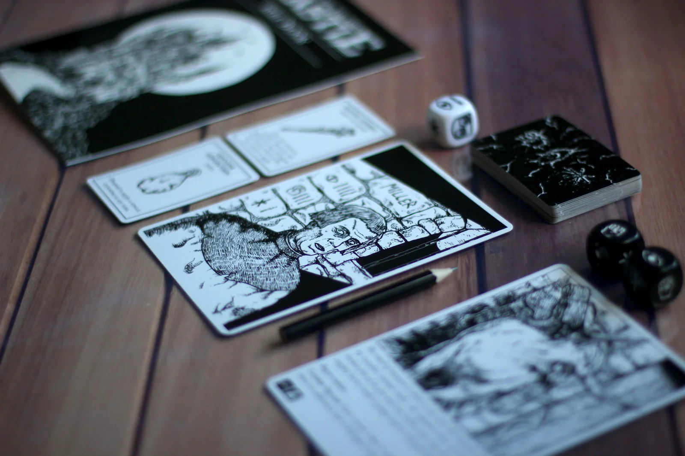

О TableWorld
Игры, за которыми собираются
Мы собрали настолки, к которым хочется возвращаться. Есть быстрые карточные игры, семейная классика и стратегии на весь вечер.
У нас можно выбрать первую настольную игру, найти дополнение к любимой коробке или подобрать подарок по возрасту и числу игроков.
Посмотреть каталог
Покупателям
Частые вопросы
Как выбрать игру в подарок?
Начните с возраста, количества игроков и времени партии. Для семейного вечера подойдут «Каркассон» и Ticket to Ride, для большой компании — «Кодовые имена» или «Саботёр».
Можно ли играть в дополнение отдельно?
Дополнения «Манчкин 2» и «Манчкин 3» требуют базовой игры. У самостоятельных вариаций, например «Монополия: Сделка», есть собственные правила и комплект карт.
Где находится магазин?
В Коммунарке, рядом с метро «Потапово». Точный адрес и схема проезда есть в разделе «Как добраться».
Как добраться
Адрес и связь
- Адрес
- Москва, посёлок Коммунарка, ул. Александры Монаховой, 85к1
- Ориентир
- ЖК «Бунинские луга», метро «Потапово»
- Телефон магазина
- +7 (913) 790-03-19
- subb3x@gmail.com
- Часы работы
- 09:00–21:00